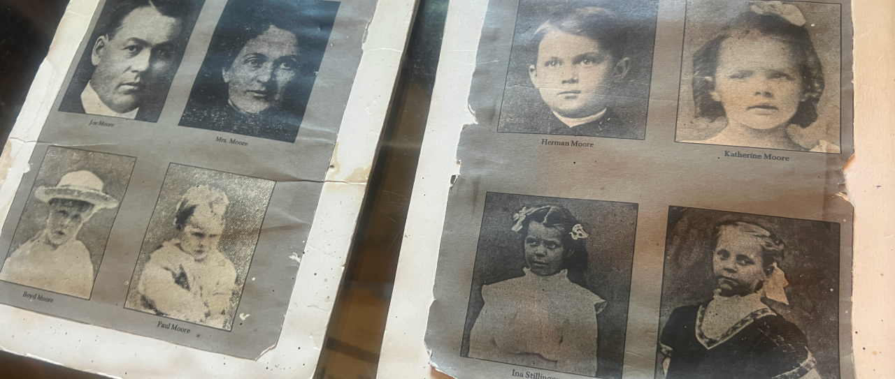

The Villisca Axe Murders
A Quiet Sunday Night: In the quaint, close-knit railroad town of Villisca, Iowa, the evening of June 9, 1912, seemed entirely unremarkable. Josiah and Sarah Moore, a well-liked local family, walked home from a Presbyterian Children's Day service with their four young children (Herman, Mary Katherine, Arthur, and Paul) and two neighborhood friends, Ina and Lena Stillinger, who had been invited over for a sleepover. The group arrived at the Moore house around 10:00 PM and went to bed. Unbeknownst to them, someone was likely already inside. Evidence later suggested that the killer had crept into the house earlier that evening and waited patiently in the sweltering attic—two spent cigarette butts were found near a knothole where the intruder presumably watched the family below. The next morning, a concerned neighbor noticed the Moore property was eerily silent and the animals had not been let out to feed. When Josiah's brother arrived and unlocked the door, he stumbled upon one of the most gruesome crime scenes in American history. Sometime between midnight and 5:00 AM, the killer had moved through the pitch-black house guided only by an oil lamp with the wick turned down to a faint glow. Using Josiah Moore’s own axe, left in the yard earlier that day, the killer systematically bludgeoned all eight sleeping inhabitants to death. Josiah was struck with the sharp blade of the axe with such violent force that it left gouge marks in the ceiling; the rest of the victims, including the six children, were killed with the blunt end. Only 11-year-old Lena Stillinger, found lying crosswise on her bed with a defensive wound on her arm, showed signs of having woken up and attempted to fight back.

The Baffling Clues: The killer left behind a bizarre and terrifying series of clues. After the slaughter, the murderer meticulously draped clothing or bedsheets over the faces of all eight victims. Furthermore, every mirror and glass window in the house had been painstakingly covered with cloth. A pan of bloody water and an untouched plate of food were left on the kitchen table, suggesting the killer lingered in the home to wash up and perhaps attempt to eat among the corpses before locking the doors and vanishing into the early dawn.
Key Facts
Date: June 9–10, 1912 (Bodies discovered June 10)
Location: Villisca, Iowa
Casualties: 8 dead (Josiah and Sarah Moore, their four children, and the two visiting Stillinger sisters); the case terrified the Midwest and remains a legendary unsolved true-crime mystery.
Cause: Unsolved mass murder; the identity and motive of the killer, or killers, remain completely unknown.
Lesson: The Villisca Axe Murders remain one of America’s most infamous unsolved cold cases, largely due to a disastrously botched initial response. Before professional investigators could secure the property, dozens of gawking townspeople were allowed to wander through the blood-soaked house, moving bodies, handling the murder weapon, and completely destroying any hope of preserving physical evidence. Despite decades of investigations, grand jury hearings, and a roster of highly publicized suspects—including a bizarre, traveling minister named Reverend George Kelly who reportedly confessed but was later acquitted, a jealous business rival, and theories of a roaming railroad serial killer—no one was ever convicted of the crime.